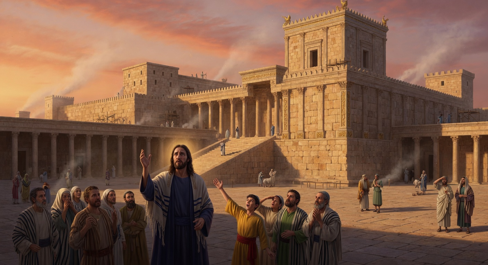
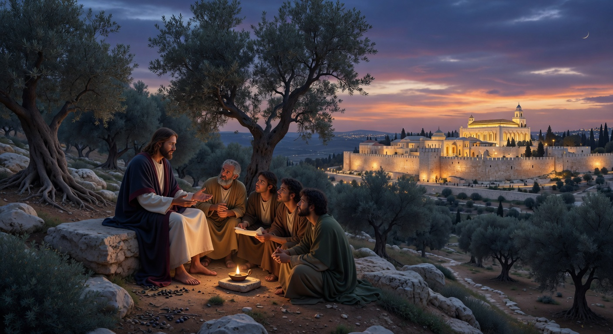
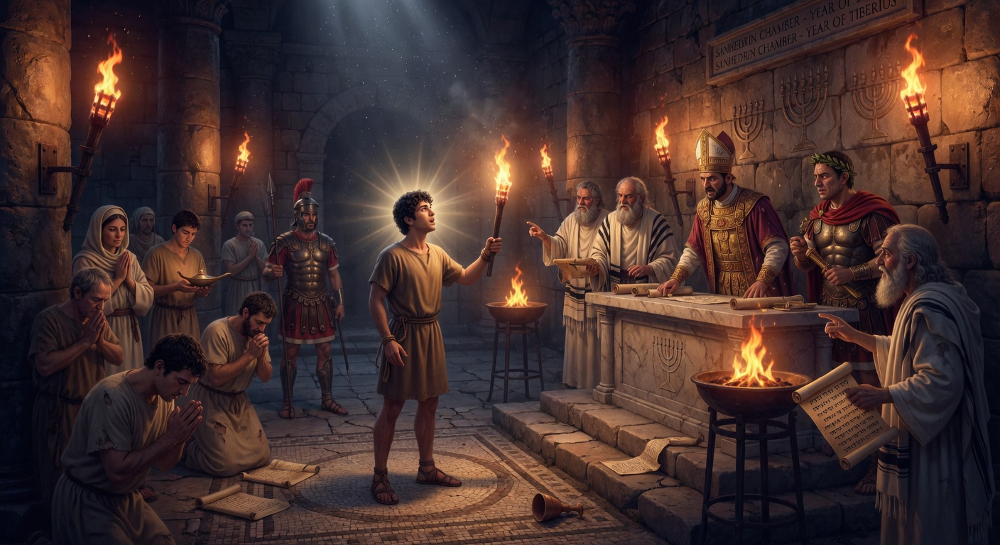
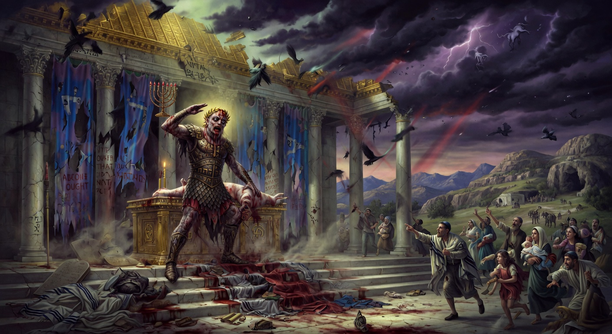
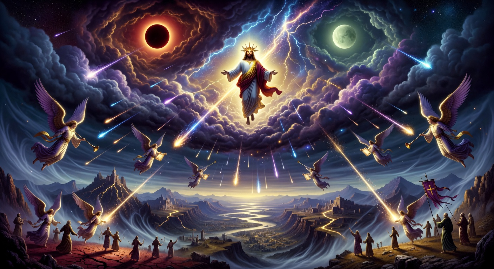
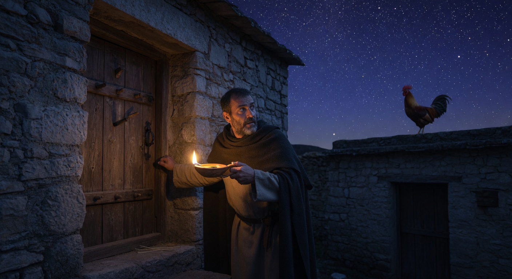

Jesus and the Coming Judgment
Jesus leaves the Temple and prophesies its complete destruction, then from the Mount of Olives describes the coming tribulation, the abomination of desolation, and the return of the Son of Man in power and glory to gather the elect. He calls His disciples to remain watchful and to endure, anchoring their hope in the enduring authority of His words and the sovereign preservation of those the Father has chosen.
As Jesus leaves the magnificent Temple, a disciple marvels at its stones. Jesus responds with a shocking prophecy.

On the Mount of Olives, with the Temple in view, Peter, James, John, and Andrew privately ask Jesus when these things will happen.

Jesus warns against being led astray, describes wars, earthquakes, and famines as the beginning of the birth pains.

When the abomination of desolation stands where he ought not to be, those in Judea must flee without hesitation.

After that tribulation, cosmic signs will appear. Then the Son of Man will come in clouds with great power and glory.

Learn from the fig tree. No one knows the day or hour. Therefore, stay awake.